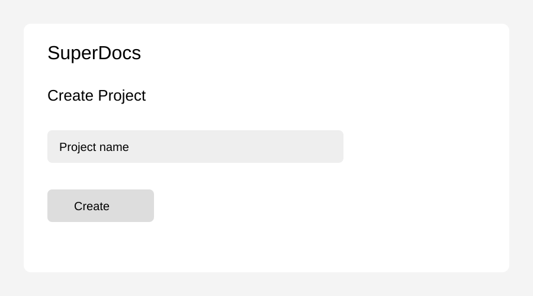

How to create a project
Open SuperDocs from your workspace.
Select Create Project from the dashboard.
Press Ctrl + K to open the project command menu.

Enter the project name and select Create.
Install the CLI
Run npm install before starting the application.